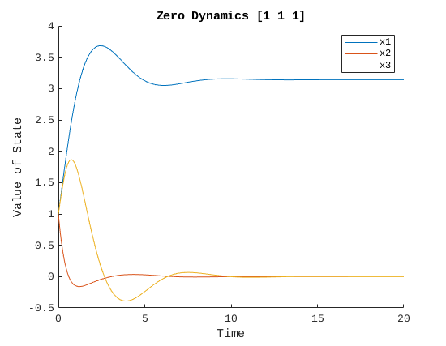
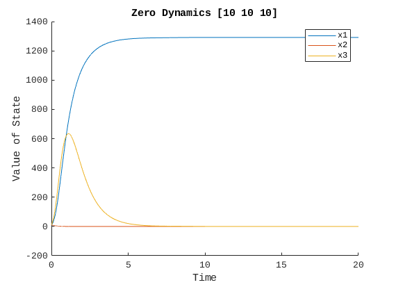
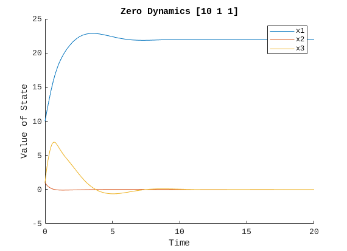
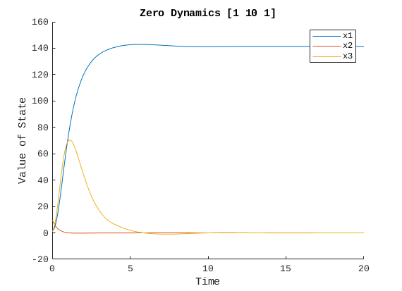
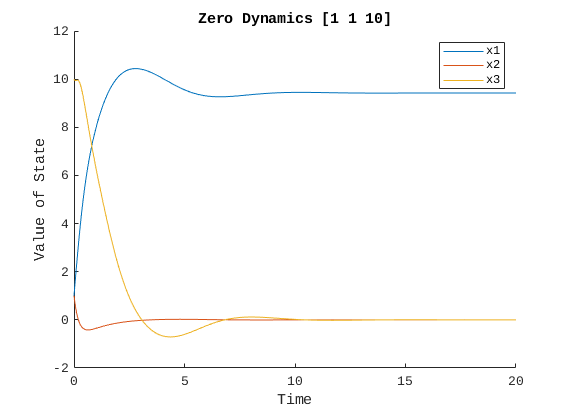
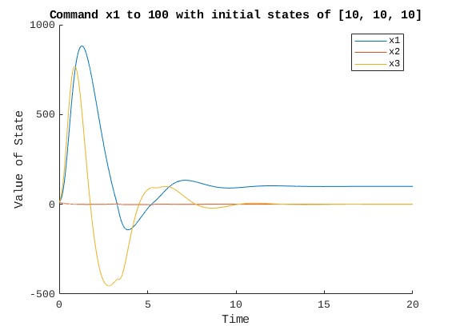
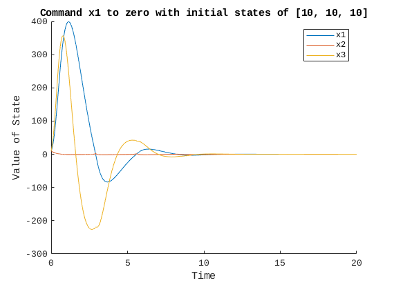
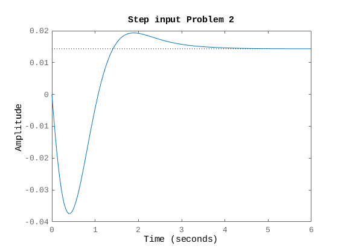

Contents
clear; close all; clc;
Problem 1
problem1()
      
Problem 2
A = [-1.01887 0.90506;
0.82225 -1.07741];
B = [-.00215; -.17555];
C = [0 1];
D = 0;
sys0 = ss(A, B, C, D);
eig(sys0)
Qn = [4 2;
2 1];
Rn = .7;
Umat = [B eye(2)];
sys2 = ss(A, Umat, C, D);
fprintf("Problem 2\n")
fprintf("a. observer gains\n")
[Kest, L, P] = kalman(sys2, Qn, Rn);
disp(L)
n = -3.5*(1/sqrt(2));
w = 3.5*sqrt(1-(1/sqrt(2))^2);
des_poles = [n+i*w; n-i*w];
Kack = acker(A, B, des_poles);
fprintf("b. controller gains by ackermann's formula \n")
disp(Kack)
reg = lqgreg(Kest,Kack);
closed_loop = feedback(sys0, -reg);
fprintf("c. closed loop poles \n")
disp(eig(closed_loop))
figure()
step(closed_loop)
title("Step input Problem 2")
ans =
-0.1850
-1.9113
Problem 2
a. observer gains
1.8568
1.2981
b. controller gains by ackermann's formula
-56.3591 -15.5642
c. closed loop poles
-2.4749 + 2.4749i
-2.4749 - 2.4749i
-1.6972 + 0.5679i
-1.6972 - 0.5679i

Problem 3
clear;
fprintf("Problem 3\n")
fprintf("Linearization about (0,0) and Jacobian calculated on paper\n")
A = [0 1; -1 0];
B = [0; 1];
G = eye(2);
Q = eye(2);
R = 1;
C = [1 0];
D = 0;
Umat = [B G];
sys = ss(A, Umat, C, D);
[Kest, L, P] = kalman(sys, Q, R);
[K,S,clp] = lqr(A,B,Q,R);
fprintf("Augmented Closed loop system is \n")
fprintf("d/dt[x; x_est] = A_aug*[x; x_est] + B_aug*r + G_aug*w - L_aug*nu\n")
fprintf("y = C_aug*[x; x_est] + nu\n")
fprintf("where \n")
A_aug = [A-B*K, B*K; zeros(2), A-L*C]
B_aug = [B; 0; 0]
G_aug = [G; G]
L_aug = [0; 0; L]
C_aug = [ C 0 0]
Problem 3
Linearization about (0,0) and Jacobian calculated on paper
Augmented Closed loop system is
d/dt[x; x_est] = A_aug*[x; x_est] + B_aug*r + G_aug*w - L_aug*nu
y = C_aug*[x; x_est] + nu
where
A_aug =
0 1.0000 0 0
-1.4142 -1.3522 0.4142 1.3522
0 0 -1.3522 1.0000
0 0 -1.4142 0
B_aug =
0
1
0
0
G_aug =
1 0
0 1
1 0
0 1
L_aug =
0
0
1.3522
0.4142
C_aug =
1 0 0 0
Functions
function problem1()
fprintf("Problem 1\n")
tol = 1e-8;
opts = odeset( 'RelTol' , tol , 'AbsTol' , tol ) ;
[ t , xz ] = ode45( @zerodynamics , [0, 20] , [1, 1, 1] , opts) ;
figure
hold on
plot(t, xz(:, 1))
plot(t, xz(:, 2))
plot(t, xz(:, 3))
hold off
title("Zero Dynamics [1 1 1]")
xlabel("Time")
ylabel("Value of State")
legend("x1", "x2", "x3")
[ t , xz ] = ode45( @zerodynamics , [0, 20] , [10, 10, 10] , opts) ;
figure
hold on
plot(t, xz(:, 1))
plot(t, xz(:, 2))
plot(t, xz(:, 3))
hold off
title("Zero Dynamics [10 10 10]")
xlabel("Time")
ylabel("Value of State")
legend("x1", "x2", "x3")
[ t , xz ] = ode45( @zerodynamics , [0, 20] , [10, 1, 1] , opts) ;
figure
hold on
plot(t, xz(:, 1))
plot(t, xz(:, 2))
plot(t, xz(:, 3))
hold off
title("Zero Dynamics [10 1 1]")
xlabel("Time")
ylabel("Value of State")
legend("x1", "x2", "x3")
[ t , xz ] = ode45( @zerodynamics , [0, 20] , [1, 10, 1] , opts) ;
figure
hold on
plot(t, xz(:, 1))
plot(t, xz(:, 2))
plot(t, xz(:, 3))
hold off
title("Zero Dynamics [1 10 1]")
xlabel("Time")
ylabel("Value of State")
legend("x1", "x2", "x3")
[ t , xz ] = ode45( @zerodynamics , [0, 20] , [1, 1, 10] , opts) ;
figure
hold on
plot(t, xz(:, 1))
plot(t, xz(:, 2))
plot(t, xz(:, 3))
hold off
title("Zero Dynamics [1 1 10]")
xlabel("Time")
ylabel("Value of State")
legend("x1", "x2", "x3")
fprintf("For the zero dynamics, x2 and x3 return to zero but x1 just steadies \n")
fprintf("out at whatever value it is at when the x2 and x3 values steady out\n")
fprintf("But the control is for designed for x1 so with the full closed loop\n")
fprintf("x2 and x3 go to zero and x1 goes where commanded")
[ t , x ] = ode45( @prop_to_ref , [0, 20] , [10, 10, 10] , opts, 100) ;
figure
hold on
plot(t, x(:, 1))
plot(t, x(:, 2))
plot(t, x(:, 3))
hold off
title("Command x1 to 100 with initial states of [10, 10, 10]")
xlabel("Time")
ylabel("Value of State")
legend("x1", "x2", "x3")
[ t , x ] = ode45( @prop_to_ref , [0, 20] , [10, 10, 10] , opts, 0) ;
figure
hold on
plot(t, x(:, 1))
plot(t, x(:, 2))
plot(t, x(:, 3))
hold off
title("Command x1 to zero with initial states of [10, 10, 10]")
xlabel("Time")
ylabel("Value of State")
legend("x1", "x2", "x3")
end
function xdot = zerodynamics(t, x)
x1 = x(1);
x2 = x(2);
x3 = x(3);
f = [x1*x2+x3; -2*x2; sin(x1)+2*x1*x2];
g = [0; x1; 1];
G = x1^2+1;
dhdx = [1 0 0];
xdot = (eye(3)-g*(1/G)*dhdx)*f;
end
function xdot = prop_to_ref(t, x, r)
x1 = x(1);
x2 = x(2);
x3 = x(3);
rdd = 0;
e = r-x1;
k = 2;
f = [x1*x2+x3; -2*x2; sin(x1)+2*x1*x2];
g = [0; x1; 1];
G = x1^2+1;
dhdx = [1 0 0];
xdot = (eye(3)-g*(1/G)*dhdx)*f+g*(1/G)*(rdd + k*e);
end
Problem 1
For the zero dynamics, x2 and x3 return to zero but x1 just steadies
out at whatever value it is at when the x2 and x3 values steady out
But the control is for designed for x1 so with the full closed loop
x2 and x3 go to zero and x1 goes where commanded